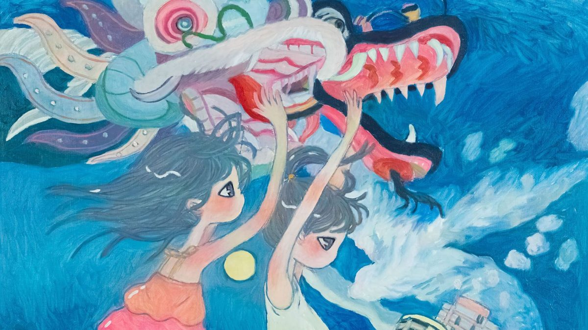

Early Life
1976 to 2000


Childhood
Takano grew up in Saitama, just north of Tokyo. Her father owned many books on natural science and science fiction, and she read them as a child.
The science fiction manga of Osamu Tezuka, the creator of Astro Boy, was an early influence.
She has said that until she was nineteen, she believed everything she read was true.
Art school
When she applied to college, she told her parents she would only go if she got into an art program.
She studied at Tama Art University in Tokyo and graduated with a bachelor's degree in 2000. Soon after, she became an assistant to Takashi Murakami.
Key facts
- BornDecember 22, 1976
- HometownSaitama, Japan
- InfluencesScience fiction, natural science, Osamu Tezuka
- DegreeBachelor's, Tama Art University, 2000